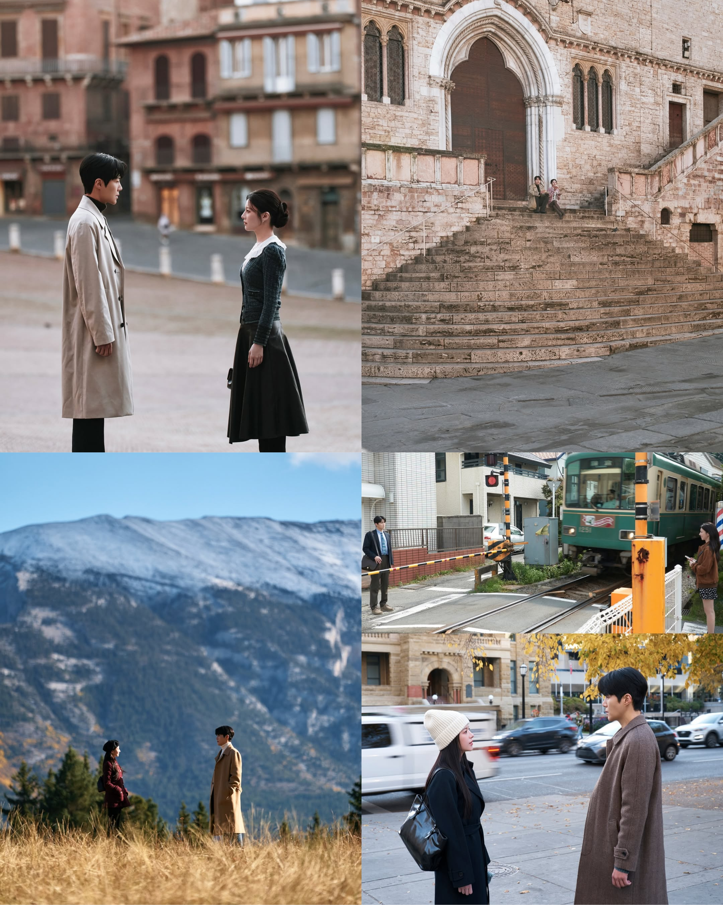
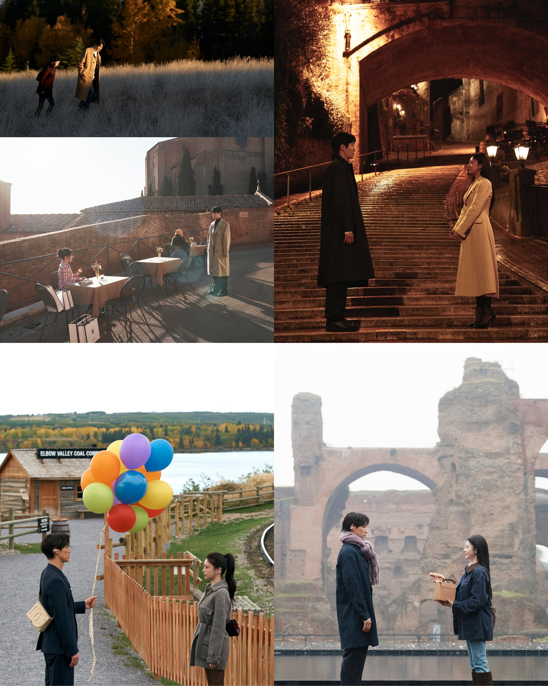
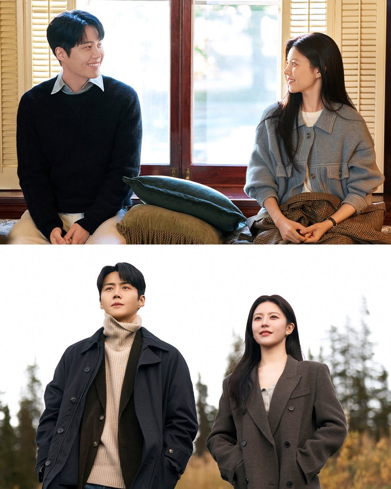
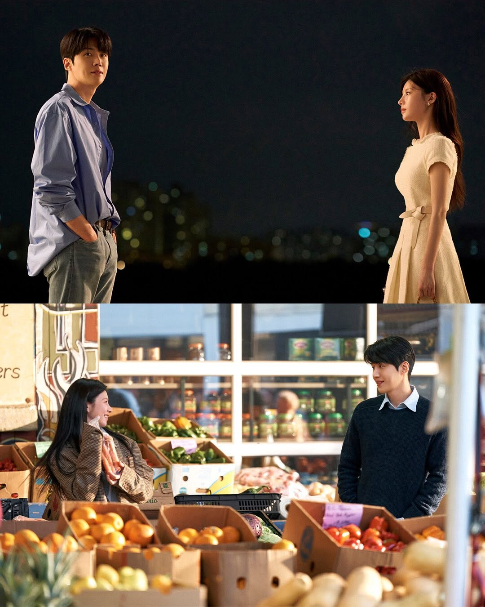
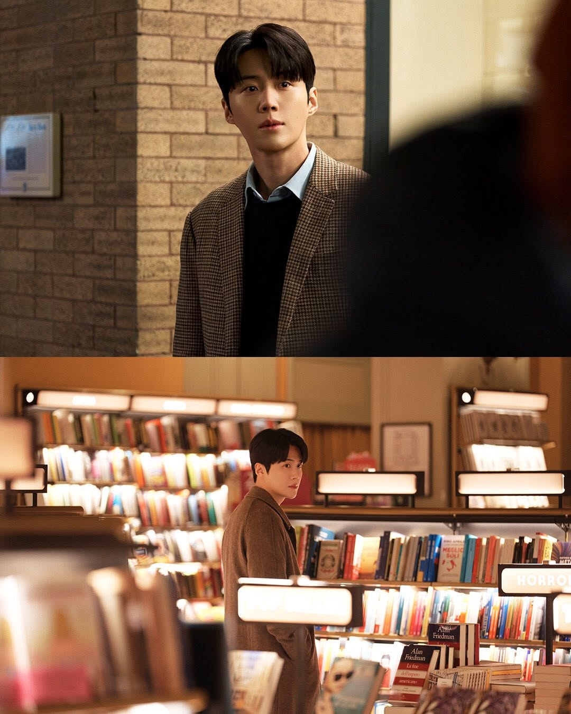
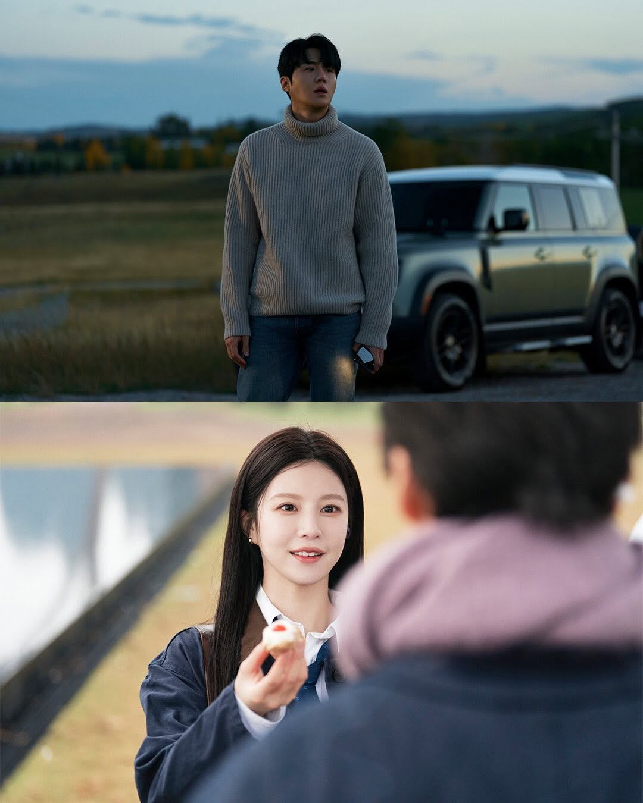
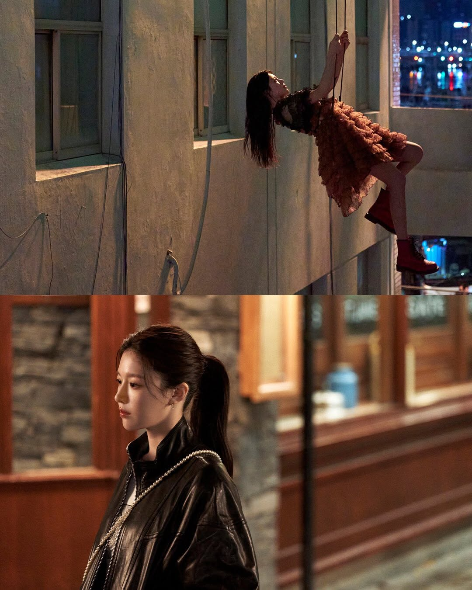

SBS dan Netflix Bagikan Still Cut's Karakter untuk Drama Terbaru "Can This Love Be Translated", yang akan tayang bulan ini.
"Can This Love Be Translated?" menggambarkan kisah cinta yang bersemi antara penerjemah multibahasa Joo Ho Jin (Kim Seon Ho) dan bintang top Cha Mu Hee (Go Youn Jung) saat hubungan profesional mereka mengalami perubahan yang tak terduga dan mengharukan.







[Can This Love Be Translated?]
--
Director: (Yoo Young Eun)
ScreenWriter: (Hong Jung Eun & Hong Mi Ran)
Line Up Cast:
Episodes: 12
Network/Platform: Netflix
Jadwal Perilisan: 16 Januari 2026
--
Director: (Yoo Young Eun)
ScreenWriter: (Hong Jung Eun & Hong Mi Ran)
Line Up Cast:
- Kim Seon Ho berperan sebagai: (Joo Ho Jin)
- Go Youn Jung berperan sebagai: (Cha Mu Hee)
- Sota Fukushi berperan sebagai: (Hiro Kurosawa)
- Lee E Dam berperan sebagai: (Shin Ji Seon)
Episodes: 12
Network/Platform: Netflix
Jadwal Perilisan: 16 Januari 2026
~~
Source:
SBS /Netfixkr